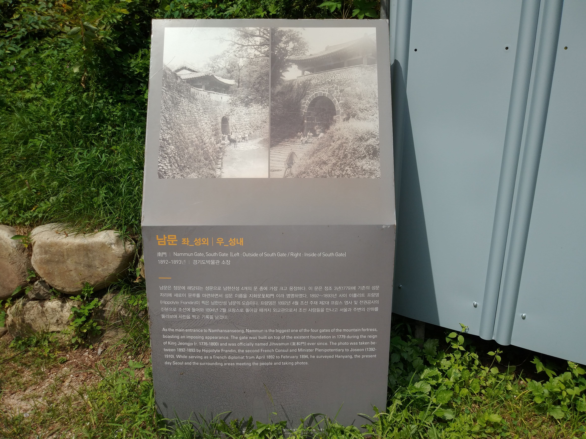
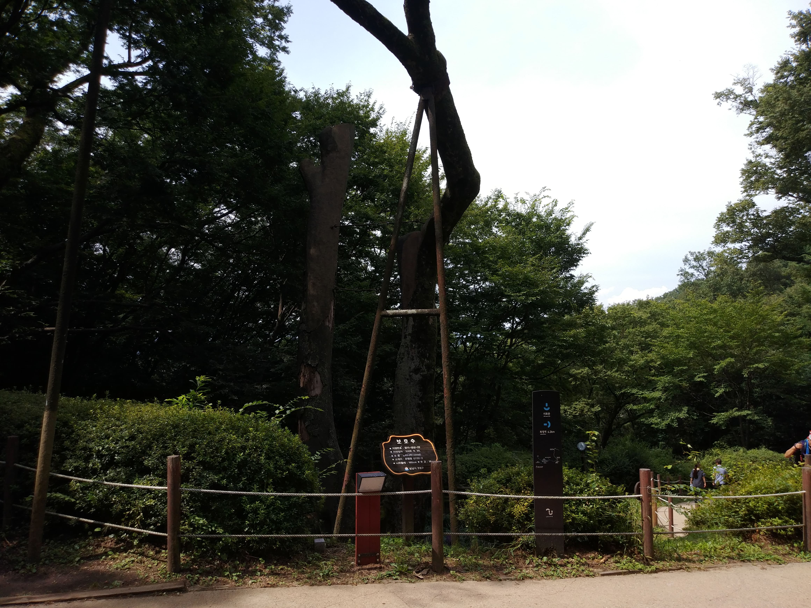
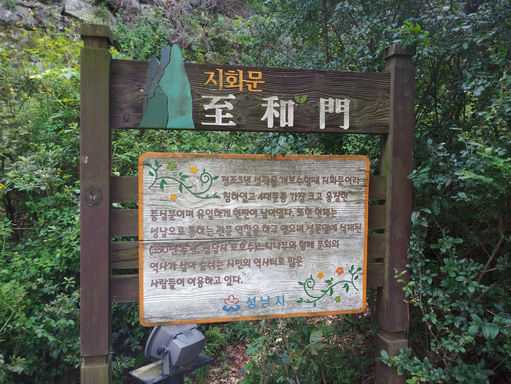
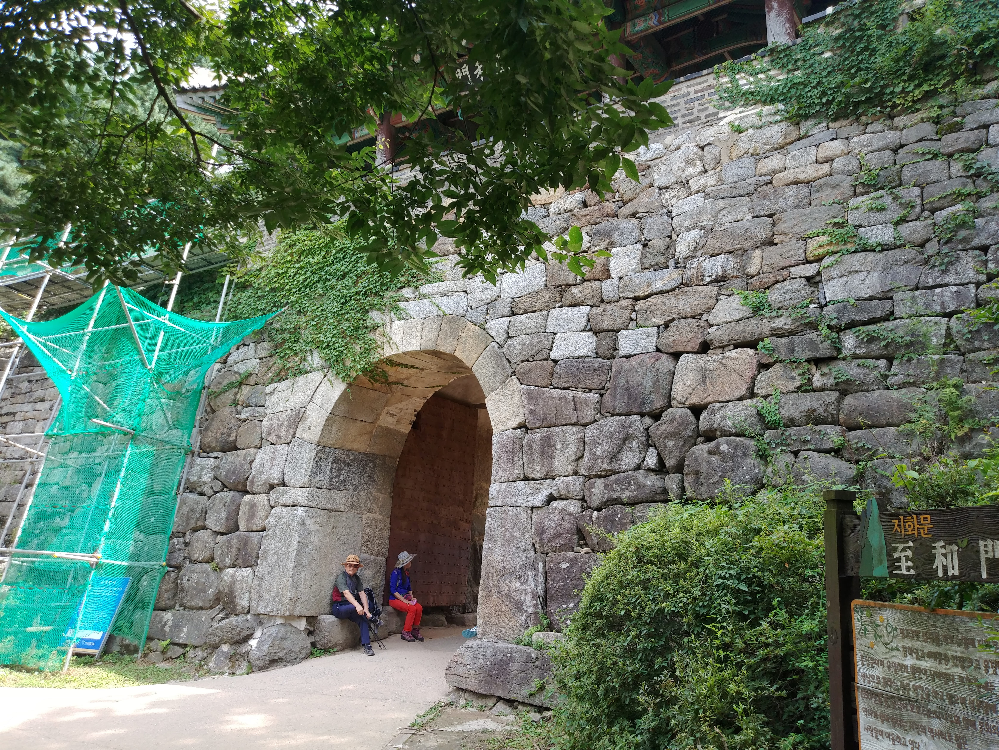
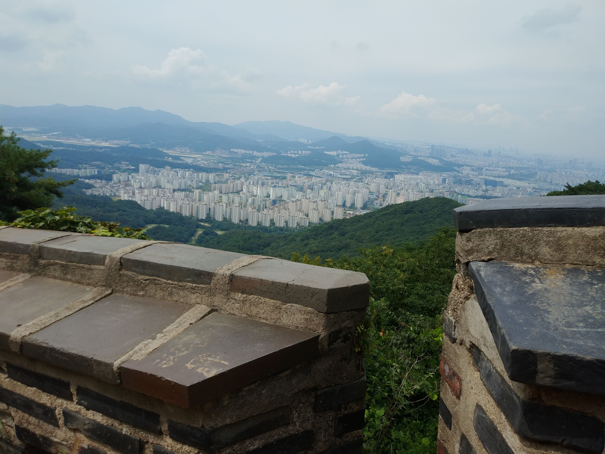
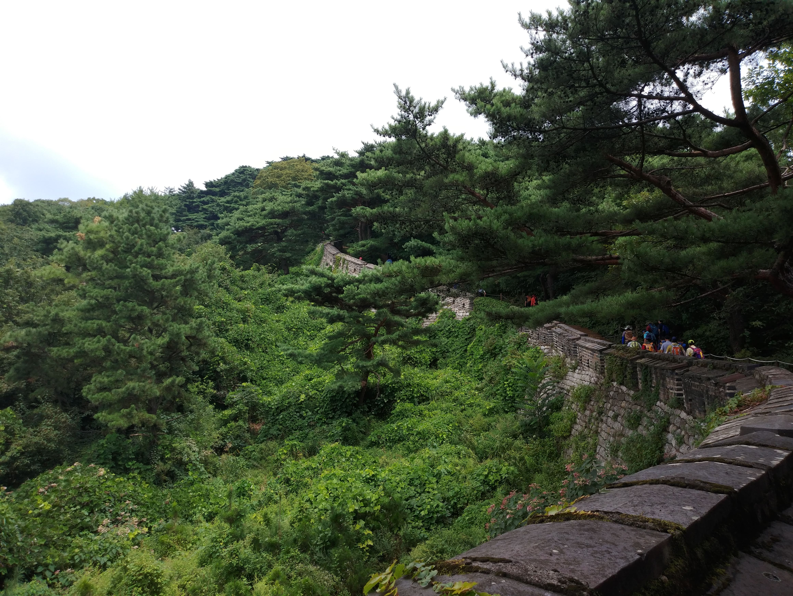
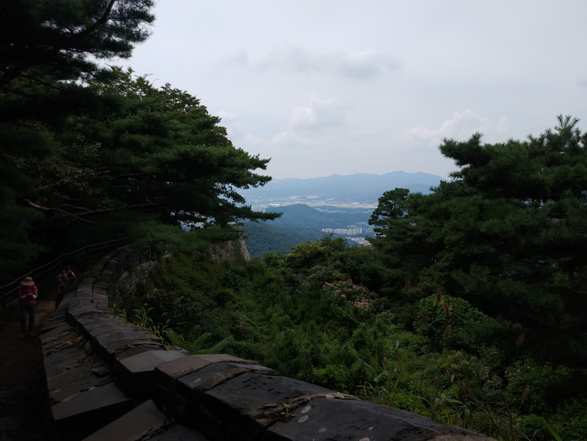

Gallery
안내인들의 소개가 부실하여 무조건 한바퀴 돌고 보니 1코스 였다. 시간이 있으면 1코스 및 원하는 곳을 가보면 될것 같다 로타리 안내도를 꼭 참조하면 좋을것 같다
남문에서 서문으로

남문
남한산성의 남문이다. 인조가 이문으로 피신하였다지...

남문
남문 안내판

보호수
남문 외측에 보호수가 있다

지화문
남문을 정조3년 개보수시 지화문이라 칭하였다

지화문
남문을 외측에서 본 전경

성안에서
멀리 서울시가 보인다

성안에서
안에서 본 외측 성벽
